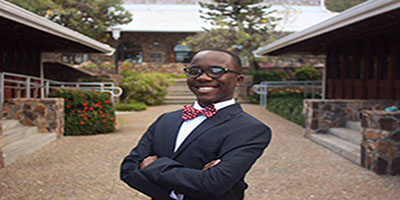

A person is only known by his character and his character determines what his future will entail. As a first generation college student Rohsaan have managed to rise above the male stereotype in his country and is destined to fulfill his dreams and make a better life for his family. Rohsaan currently serves as the Junior Senator of University of the Virgin Islands Student Government Association as well as the Secretary for both National Assocation of Black Accountants Chapter and National Association of States Board of Accountacy UVI Chapter. Along with his executive roles Rohsaan has also been an active member of the SGA Queens Committee and the St Kitts Nevis Student Association. Admist his numerous roles among the school campus Rohsaan has still managed to be exceptional within the class room thus being a recipeint of the Deans List Award 4 times and being an inductee in both the Golden Key Honor Societyand the Alpha Mu Gamma National Foreign Language Honor Society. In the future Rohsaan strives to be a Forensic Accountant then later on obtaining his Certified Public Accountant professional certification to open his own public accountant firm and to offer free financial advising to those in his country.
Rohsaan Francis

|
Description |

|